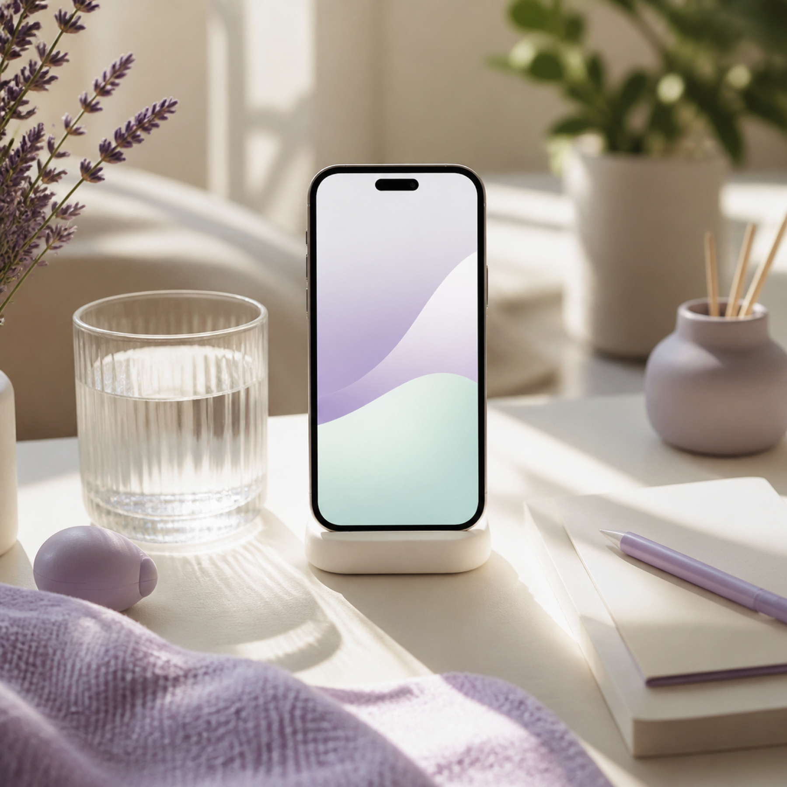
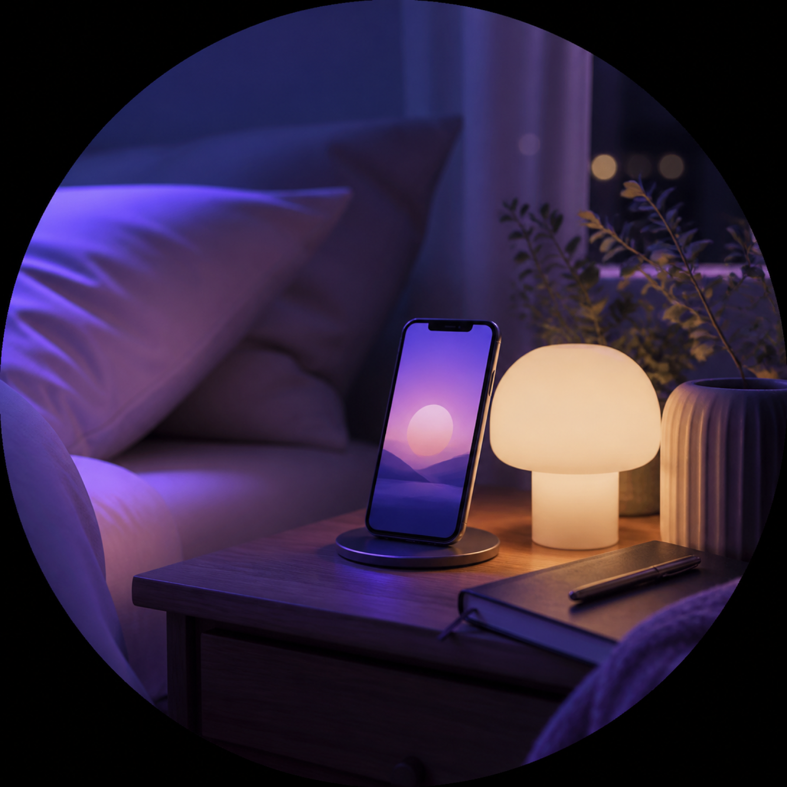

아침 루틴
자동 정렬
AI Rhythm Care App
루미루프는 일정, 컨디션, 집중 패턴을 읽어 오늘 해야 할 일을 가장 편안한 순서로 정리해주는 가상의 AI 루틴 코치입니다.
아침 준비부터 깊은 집중, 밤의 회고까지. 루미루프는 사용자의 생활 흐름을 방해하지 않는 조용한 알림과 시각적 루프로 루틴을 이어줍니다.

아침 루틴
자동 정렬

집중 흐름
실시간 조정

회고와 휴식
부드러운 마무리
오늘의 컨디션에 맞춰, 할 일을 다시 배열합니다.
해야 할 일을 모으고, 에너지 곡선에 맞게 순서를 바꾸고, 다시 시작하기 쉽게 안내합니다.
캘린더와 할 일 목록 사이에서 흩어지는 맥락을 하나의 리듬 보드로 묶습니다. 루틴이 실패해도 다음 가능한 타이밍을 제안해 부담 없이 흐름을 회복합니다.
루틴을 단순 체크리스트로 끝내지 않고, 완료 시점·중단 이유·집중 강도를 기록해 다음 계획의 우선순위를 자동으로 다듬습니다.
가벼운 정리 후 25분 집중을 추천해요.
AI 리듬 코치
반복되는 지연 시간과 컨디션 패턴을 바탕으로 오늘 성공 가능성이 높은 루틴을 제안합니다. 사용자가 부담을 느끼지 않도록 알림 강도와 실행 단위를 자동 조절합니다.
맞춤형 계획부터 AI 리듬 분석까지
아래 버튼을 눌러 가상의 스토어 화면으로 이동하는 데모입니다. 실제 서비스가 아닌 포트폴리오용 랜딩 페이지입니다.